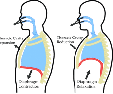

Répondez à ces quelques exercices
Physiologie de la respiration
Complétez les mots manquants .
Voici les mots à utiliser : expiration - inspiration - oxygène
Pour la fréquence respiratoire : des chiffres sont attendus

Cycle respiratoire | Informations[1]
A l'inspiration, l'air entre dans le nez, la cage thoracique se gonfle, le diaphragme se contracte et s'abaisse
A l'expiration, le diaphragme est relaché, il remonte, favorisant ainsi l'expulsion de l'air par le nez